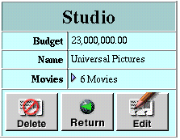
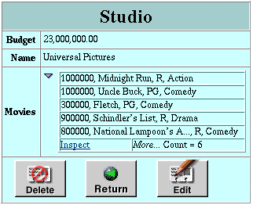
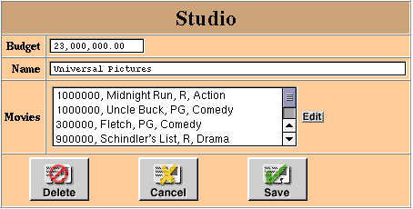

PATH
WebObjects 4.0 Documentation >
WebObjects Tools and Techniques
 Table of Contents
Table of Contents  Previous Section
Previous Section
Inspect and Edit Pages
Inspect pages and edit pages display the data for a single record of an entity. An edit page allows you to make changes to the record and save the changes, while an inspect page is read-only.
An inspect page looks like this:

Note the buttons at the bottom of the page:
Also note the Movies property in the example above. You click the triangle to display the movies of this studio in a list, browser, or table, as in the following example:

This property is configured with the DisplayToManyTable component. For more on how this is done, see "Representation of Relationships".
An edit page (or edit component) looks like this:

It is similar to the inspect page, except that it has a Save button (for saving changes to the database) instead of an Edit button. If you click the Edit button next to the list of Movies, an edit-relationship page is displayed for editing the records in the to-many relationship. Edit components can occur in multiple-component pages, such as the master-detail page.
Table of Contents  Next Section
Next Section